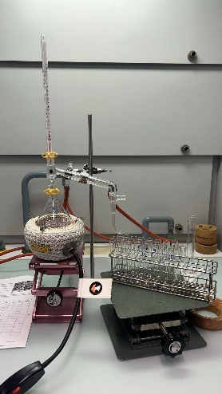

Interdisziplinäres Arbeiten
Chemie und Geschichte und Politik
Unser Thema ist die Destillation — und wir gehen sie von zwei Seiten an. Im Labor haben wir 50 mL eines Alkohol/Wasser-Gemischs (70 Vol-%) destilliert und die 25 aufgefangenen Fraktionen einzeln vermessen. In den Quellen des 18. Jahrhunderts, allen voran bei Lavoisier, haben wir untersucht, wie damals technisch destilliert wurde. Am Schluss führen wir beides zusammen.
Warum enthält das erste Destillat mehr Ethanol und das letzte mehr Wasser?
Durchführung, Messprotokoll, Diagramme, die Antwort auf die Frage und das Teilchenmodell als interaktive Animation.
Wie wurde im 18. Jahrhundert destilliert und was bedeutete das für den Alkohol?
Die Beantwortung anhand von Lavoisiers Traité élémentaire de chimie, Kockmann und CHEMIE.DE — dazu Quellen- und Abbildungsverzeichnis.
Verknüpfung der beiden Fachbereiche
Was unsere Messwerte mit Lavoisiers Serpentin zu tun haben — und welche Fragen daraus für eine weiterführende Arbeit entstehen.
Warum enthält das erste Destillat mehr Ethanol und das letzte Destillat mehr Wasser?
Die Fragestellung des Chemie-Teils. Wie wir destilliert haben, was dabei herauskam — und was die 25 Messreihen darüber aussagen.
Trennen, weil zwei Stoffe unterschiedlich gern verdampfen
Destillation ist ein thermisches Trennverfahren für homogene Gemische. Getrennt wird nicht nach Grösse oder Ladung, sondern nach einer einzigen physikalischen Eigenschaft: der Siedetemperatur — genauer nach der Flüchtigkeit, also danach, wie leicht ein Teilchen die Flüssigkeit verlässt.
Was wir wissen wollten
Warum enthält das erste Destillat mehr Ethanol und das letzte mehr Wasser — und wie hoch ist der Alkoholgehalt der einzelnen Fraktionen?
Woran wir es messen
Über die Dichte. Ethanol ist deutlich leichter als Wasser, deshalb verrät die Dichte eines 1-mL-Tropfens direkt seinen Alkoholgehalt.
Warum es nie perfekt wird
Beim Sieden verdampft der andere Stoff immer ein Stück weit mit. Eine einfache Destillation reichert an, sie trennt nicht vollständig.
- Siedetemperatur
- 78.3 °C
- Dichte (20 °C)
- 0.789 g/mL
- Rolle im Versuch
- leichtflüchtig — geht zuerst über
- Siedetemperatur
- 100.0 °C
- Dichte (20 °C)
- 1.000 g/mL
- Rolle im Versuch
- schwerflüchtig — bleibt grösstenteils zurück
Wie wir vorgegangen sind
Aufbau nach Vorgabe: Rundkolben mit Destillieraufsatz, Thermometer auf Höhe des Seitenarms, Liebig-Kühler im Gegenstrom, Vorstoss über den nummerierten Reagenzgläsern.

Abbildung 1: Experimentaufbau
Die Apparatur, wie sie bei uns im Labor stand. Der Vergleich mit dem interaktiven Teilchenmodell weiter unten zeigt, was in jedem dieser Bauteile passiert.
- Rundkolben50 mL Gemisch, Siedesteine, auf dem Heizpilz
- AufsatzThermometer auf Höhe des Seitenarms — misst die Kopftemperatur
- Liebig-KühlerKühlwasser im Gegenstrom: Zulauf unten, Ablauf oben
- Vorstossleitet das Kondensat ins nummerierte Reagenzglas
Reagenzgläser vorbereiten. 25 Gläser durchnummerieren und 6.7 cm unterhalb des oberen Randes markieren — diese Marke entspricht 2 mL Destillat.
Ansatz einfüllen. 50 mL des eingefärbten Alkohol/Wasser-Gemischs (70 Vol-%) mit dem Messzylinder abmessen und in den Rundkolben geben, dazu vier Siedesteinchen gegen Siedeverzug.
Apparatur aufbauen und den Kolben am Aufsatz mit der Klammer sichern. Kühlwasser anstellen, bevor geheizt wird — Gegenstrom: Zulauf unten, Ablauf oben.
Erhitzen. Heizpilz auf Stufe 3, mit dem Laborboy an den Kolben heranfahren. Sobald es zu stark schäumt, den Heizpilz leicht absenken. Zielrate: etwa 1 Tropfen pro Sekunde.
Fraktionieren. In jedes Reagenzglas exakt 2 mL bis zur Marke sammeln, dann auf das nächste wechseln — bis das Gemisch vollständig übergegangen ist.
Temperatur protokollieren. Beim ersten Tropfen und bei jedem Glaswechsel die Kopftemperatur ablesen und in die Tabelle eintragen.
Dichte bestimmen. Reagenzglas im Erlenmeyer auf die Waage stellen, tarieren, mit der Eppendorfpipette genau 1 mL Destillat einfüllen, auf drei Nachkommastellen ablesen. Zügig arbeiten — Alkohol ist leichtflüchtig.
Alkoholgehalt ermitteln. Aus jeder Dichte über die Dichtetabelle den Volumenanteil σ in Vol-% ablesen und protokollieren.
25 Fraktionen, drei Kurven
Zu jeder der 25 Fraktionen à 2 mL haben wir die Kopftemperatur abgelesen, 1 mL abpipettiert und gewogen und daraus über die Dichtetabelle den Alkoholgehalt σ bestimmt. Zuerst das Protokoll mit den Rohwerten, danach dieselben Zahlen als Kurven.
1Messprotokoll
Alle Rohwerte des Versuchs. Die Zeile ganz unten zeigt die Mittelwerte über alle 25 Fraktionen.
Tab. 1 — Messprotokoll
| Nr. | V [mL] | T [°C] | ρ [g/mL] | σ [Vol-%] |
|---|---|---|---|---|
| Ø | 50 gesamt | — | — | — |
⚠ Fraktionen 1 und 16 ergeben 100 Vol-%. Wegen des Azeotrops bei ≈ 97 Vol-% ist das nicht erreichbar — beide Werte sind Messfehler. Siehe Auswertung.
2Diagramme
Alle drei Diagramme tragen dieselbe x-Achse: das kumulierte Volumen, also wie viel Destillat insgesamt bereits übergegangen ist. Fahre mit der Maus über eine Kurve, um einzelne Fraktionen abzulesen.
Temperatur der Destillate
Solange Ethanol im Kolben vorhanden ist, hält sich die Kopftemperatur auf einem Plateau bei 78–79 °C. Der Anstieg am Ende ist das Signal: Der Alkohol ist aufgebraucht.
Dichte der Destillate
Reines Ethanol hat 0.789 g/mL, Wasser 1.000 g/mL. Die gemessene Dichte liegt lange nahe am Ethanolwert und klettert erst in den letzten Fraktionen Richtung Wasser.
Alkoholgehalt der Destillate
Aus der Dichte abgelesen. Das Spiegelbild der Dichtekurve — und die eigentliche Antwort auf die Frage, ob die Trennung funktioniert hat.
Warum zuerst der Alkohol kommt — und am Schluss das Wasser
Ethanol siedet früher, deshalb verdampft es zuerst
Bei der Destillation wird ein Flüssigkeitsgemisch erhitzt. Ethanol hat mit 78.3 °C einen niedrigeren Siedepunkt als Wasser mit 100 °C. Deshalb verdampft Ethanol beim Erhitzen zuerst stärker als Wasser. Dadurch enthält das erste Destillat deutlich mehr Ethanol.
Das bestätigen unsere Messwerte
Der Alkoholgehalt war zu Beginn sehr hoch und lag bei den ersten Destillaten ungefähr bei 85–90 %. Gleichzeitig war die Dichte mit etwa 0.83–0.85 g/mL relativ niedrig, was auf einen hohen Ethanolanteil hinweist.
Mit zunehmender Destillation wird immer mehr Ethanol aus der Mischung entfernt. Dadurch steigt der Anteil von Wasser. Die Temperatur stieg bei uns von etwa 71 °C auf 93 °C, während die Dichte bis auf 0.970 g/mL zunahm. Gleichzeitig sank der Alkoholgehalt bei den letzten Destillaten bis auf 24 %. Das zeigt, dass die letzten Destillate deutlich mehr Wasser enthielten.
Warum die Werte nicht genau den Siedepunkten entsprechen
Die Werte entsprechen jedoch nicht genau den Siedepunkten von reinem Ethanol und Wasser. Das liegt daran, dass wir ein Gemisch destillierten und sich beide Stoffe teilweise gemeinsam im Dampf befinden. Auch Messungenauigkeiten und Wärmeverluste können zu Abweichungen geführt haben.
Anreichern statt trennen
Das erste Destillat enthält mehr Ethanol, weil Ethanol den niedrigeren Siedepunkt besitzt und deshalb zuerst stärker verdampft. Während der Destillation wird immer mehr Ethanol aus dem Gemisch entfernt. Dadurch nimmt der Wasseranteil im verbleibenden Gemisch und somit auch in den späteren Destillaten zu.
Unsere Messwerte bestätigen dies: Der Alkoholgehalt und die Dichte zeigen deutlich, dass die ersten Destillate alkoholreicher und die letzten Destillate wasserreicher waren. Eine vollständige Trennung ist jedoch nicht möglich, da auch Wasser bereits während der ersten Destillation teilweise mitverdampft.
+Interpretation und Reflexion im Detail
Die einzelnen Leitfragen aus dem Experiment — Siedepunkte, Vergleich mit dem Sollwert, Volumenbilanz und die Abweichungen, die uns aufgefallen sind.
Getrennt wird nach Flüchtigkeit, nicht nach «Alkohol» und «Wasser»
Über einer Flüssigkeit stellt sich ein Dampf ein, dessen Zusammensetzung nicht der Flüssigkeit entspricht: Die leichter flüchtige Komponente ist im Dampf angereichert. Die zugrunde liegende Grösse ist die Siedetemperatur — bei uns 78.3 °C für Ethanol gegen 100 °C für Wasser. Weil der Dampf aber nie nur aus Ethanol besteht, ist eine einfache Destillation eine Anreicherung und keine vollständige Trennung.
Ethanol und Wasser
Ethanol (C₂H₅OH) hat eine Siedetemperatur von 78.3 °C und eine Dichte von 0.789 g/mL bei 20 °C. Wasser (H₂O) siedet bei 100 °C und besitzt eine Dichte von 1.000 g/mL. In unseren Messungen treten beide Werte annähernd auf. Bei den ersten Messungen lag die Dichte bei ungefähr 0.83 g/mL, was dem Wert von Ethanol relativ nahekommt. In den späteren Fraktionen steigt die Dichte weiter an und nähert sich zunehmend dem Wert von Wasser.
Alle drei erzählen dieselbe Geschichte, nur in anderer Grösse
Temperatur: ein langes Plateau bei 78–79 °C über die ersten rund 30 mL. Solange zwei Komponenten gemeinsam sieden, bleibt die Kopftemperatur beim Siedepunkt des leichter flüchtigen Gemischs stehen. Ab etwa 42 mL steigt sie steil auf 93 °C — der Kolbeninhalt ist jetzt so wasserreich, dass er erst bei höherer Temperatur siedet.
Dichte: spiegelbildlich flach zwischen 0.833 und 0.846 g/mL, danach steiler Anstieg auf 0.970 g/mL. Alkoholgehalt: exakt umgekehrt — hoch (85–90 Vol-%) im Plateau, Absturz auf 24 Vol-% in der letzten Fraktion. Das ist zwingend so, weil σ direkt aus ρ abgelesen wurde: mehr Wasser bedeutet höhere Dichte und tieferen Alkoholgehalt.
Fazit: In den Destillaten 1–21 herrscht anteilsmässig klar Ethanol vor. Erst ab Fraktion 23 (46 mL) dominiert Wasser. Die Temperaturkurve ist dabei der Frühindikator — sie steigt schon an, bevor der Alkoholgehalt einbricht.
50 mL aus 50 mL — rechnerisch schön, praktisch unmöglich
Die Tabelle ist so gebaut, dass 25 Fraktionen à 2 mL genau 50 mL ergeben. Eine verlustfreie Destillation gibt es aber nicht. Real fehlen Volumen durch den Rückstand im Siedekolben (Sumpf plus die nichtflüchtigen Farbstoffe), durch Benetzung von Kolbenwand, Aufsatz und Kühlerrohr, durch Dampfverluste an den Schliffen und durch die Reste in Pipette und Reagenzglas.
Gegenläufig wirkt ein Effekt, den man leicht übersieht: Ethanol und Wasser zeigen Volumenkontraktion. 50 mL Gemisch enthalten mehr Einzelvolumen, als die Mischung einnimmt — beim Trennen «gewinnt» man Volumen zurück. Dazu kommt, dass die 2-mL-Marke von Auge angesetzt wurde; 25 kleine Abweichungen summieren sich. Dass die Bilanz genau aufgeht, ist deshalb der Tabelle geschuldet, nicht der Messung.
13 Prozentpunkte zu hoch — und dafür gibt es gute Gründe
Weil alle Fraktionen gleich gross sind, ist das arithmetische Mittel zugleich das volumengewichtete. Bei vollständiger, verlustfreier Destillation müsste es also die 70 Vol-% des Ansatzes reproduzieren. Es tut es nicht — aus zwei Klassen von Gründen:
Stofflich: Es ging nicht das gesamte Wasser mit über. Was im Kolben zurückblieb, war überwiegend Wasser. Fehlt aber Wasser in der Bilanz der aufgefangenen Fraktionen, verschiebt sich deren Mittelwert nach oben.
Systematischer Messfehler — und der zeigt immer in dieselbe Richtung: Ethanol ist leichtflüchtig. Zwischen Pipettieren und Ablesen verdampft ein Teil der Probe, die gewogene Masse wird zu klein, die berechnete Dichte zu klein — und aus zu kleiner Dichte liest man einen zu hohen Alkoholgehalt ab. Dieselbe Richtung haben Luftblasen in der Pipette und die Temperatur: Die Dichtetabelle gilt für 20 °C, unsere Destillate waren beim Wägen wärmer und damit weniger dicht.
Zwei Messwerte von 100 Vol-% können nicht stimmen
Ethanol und Wasser bilden bei rund 78.2 °C ein Azeotrop: Bei etwa 95.6 Massen-% (≈ 97 Vol-%) Ethanol haben Dampf und Flüssigkeit dieselbe Zusammensetzung. Ab diesem Punkt bringt weiteres Destillieren nichts mehr — reines Ethanol ist durch Destillation grundsätzlich nicht erreichbar. Unsere Werte von 100 Vol-% bei den Fraktionen 1 und 16 sind daher Messfehler. Fraktion 16 verrät sich zusätzlich durch die Nachbarschaft: 0.791 g/mL zwischen 0.842 und 0.833 g/mL ist ein Ausreisser, vermutlich ein Pipettier- oder Wägefehler.
Für wasserfreies Ethanol braucht die Industrie deshalb andere Verfahren — Schleppmittel-Destillation oder Molekularsiebe. Genau hier hört die Destillation auf.
Die Trennung funktioniert — aber sie reichert nur an
Aus 70 Vol-% Einsatz wurden Destillate mit über 85 Vol-% in den ersten zwei Dritteln und ein wasserreicher Rest am Schluss. Der Alkohol wurde also deutlich angereichert, der Sumpf im Kolben entsprechend abgereichert. Wer reineres Ethanol will, müsste die ersten Fraktionen sammeln und erneut destillieren — oder gleich eine Kolonne verwenden, die genau das hundertfach übereinander tut.
Was im Kolben wirklich passiert
Die Apparatur unten läuft als Simulation. Jede Kugel ist ein Teilchen. Beobachte, wie zuerst fast nur rote Ethanolteilchen übergehen — und wie gegen Ende, wenn der Alkohol im Kolben knapp wird, die Temperatur steigt und immer mehr Wasser mitkommt. Genau das zeigen auch unsere Messdaten.
Klicke auf einen der drei Schritte, um den zugehörigen Teil der Apparatur hervorzuheben.
Wie wurde die Destillation im 18. Jahrhundert technisch durchgeführt und welche Bedeutung hatte sie für die Herstellung von Alkohol?
Die Fragestellung des Teils Geschichte und Politik — beantwortet anhand zeitgenössischer und moderner Quellen.
Von der Alchemie zum Serpentin
Die Destillation ist ein Verfahren, mit dem Stoffgemische aufgrund ihrer unterschiedlichen Flüchtigkeit getrennt werden können. Bereits im Mittelalter wurde sie in Europa eingesetzt, beispielsweise zur Herstellung von Rosenwasser, Arzneimitteln und später auch Alkohol. Im Laufe der Zeit wurden die Destillationsapparate technisch weiterentwickelt. Besonders im 18. Jahrhundert war die Destillation bereits ein wichtiges Verfahren für die Herstellung von Spirituosen. Die Frage, wie die Destillation im 18. Jahrhundert technisch durchgeführt wurde und welche Bedeutung sie für die Herstellung von Alkohol hatte, lässt sich anhand zeitgenössischer und moderner Quellen untersuchen.
Von der Alchemie zum Alkohol
Laut CHEMIE.DE war die Chemie im Mittelalter stark von der Alchemie geprägt. Viele Kenntnisse über chemische Verfahren gelangten über den arabischen Raum nach Europa. Die Destillation wurde zunächst vor allem zur Herstellung von Heilmitteln, Duftstoffen und Ölen verwendet. Später wurde sie auch für die Herstellung von Alkohol eingesetzt. Dabei konnte der Alkoholgehalt einer vergorenen Flüssigkeit durch Destillation erhöht werden. Die Destillation entwickelte sich somit von einem eher handwerklichen Verfahren zu einer Technik, die auch für die Herstellung alkoholischer Getränke immer wichtiger wurde. (CHEMIE.DE [Hrsg.] 2026)
Der Alambik und die Verbesserung der Apparaturen
Eine wichtige Entwicklung war die Verbesserung der verwendeten Apparaturen. Zu den wichtigsten Geräten gehörte der Alambik. Eine Flüssigkeit wurde dabei erhitzt, wodurch Dämpfe entstanden. Diese wurden durch Leitungen in einen anderen Teil der Apparatur geführt und dort wieder abgekühlt. Dadurch kondensierten die Dämpfe und konnten als Destillat aufgefangen werden. Norbert Kockmann beschreibt, dass sich die Destillation besonders zwischen dem 17. und 18. Jahrhundert technisch weiterentwickelte. Die Apparaturen wurden verbessert und die Destillation gewann zunehmend auch für industrielle Anwendungen an Bedeutung. Gleichzeitig stieg die Nachfrage nach destillierten Produkten, darunter alkoholische Getränke. (Kockmann 2014)
Was Lavoisier 1789 beschreibt
Eine besonders wichtige Primärquelle für die Untersuchung des 18. Jahrhunderts ist das Werk Traité élémentaire de chimie des französischen Chemikers Antoine-Laurent de Lavoisier aus dem Jahr 1789. Lavoisier beschreibt darin verschiedene chemische Verfahren und Apparaturen. Einen eigenen Abschnitt widmet er der «Distillation simple», also der einfachen Destillation. Dieser Abschnitt beginnt auf Seite 442. (Lavoisier 1789, S. 442)
Lavoisiers Beschreibung zeigt, dass die Destillation im 18. Jahrhundert bereits mit relativ komplexen Apparaturen durchgeführt wurde. Er beschreibt unter anderem einen Alambik, verschiedene Gefässe sowie Vorrichtungen zum Abkühlen der entstehenden Dämpfe. Für bestimmte Destillationen empfiehlt er Apparaturen aus Metall. Dabei erwähnt er ausdrücklich die Destillation von «liqueurs spiritueuses», also alkoholischen Flüssigkeiten. (Lavoisier 1789, S. 445)
Die Kühlung als Schlüssel: réfrigérent und serpentin
Besonders wichtig war die Kühlung. Beim Erhitzen der Flüssigkeit entstehen Dämpfe, die anschliessend wieder in eine Flüssigkeit umgewandelt werden müssen. Lavoisier beschreibt dafür einen sogenannten «réfrigérent», einen Kühler, der mit Wasser gefüllt wurde. Erwärmte sich das Wasser, musste es durch kaltes Wasser ersetzt werden. Dadurch konnten die Dämpfe abgekühlt und wieder verflüssigt werden. (Lavoisier 1789, S. 445–446)
Für die Herstellung von Alkohol beschreibt Lavoisier zusätzlich einen «serpentin». Dabei handelt es sich um ein spiralförmig gewundenes Rohr, das von Wasser umgeben ist. Durch diese Konstruktion konnte die Oberfläche vergrössert werden, an der die Alkoholdämpfe abgekühlt wurden. Lavoisier erwähnt ausdrücklich, dass solche Vorrichtungen bei der Herstellung von «eau-de-vie», also Branntwein, verwendet wurden. Diese Beschreibung zeigt, dass die Destillation im 18. Jahrhundert bereits gezielt zur Herstellung alkoholischer Produkte eingesetzt wurde. (Lavoisier 1789, S. 446–447)
Bedeutung für die Alkoholproduktion
Die technische Entwicklung hatte deshalb eine grosse Bedeutung für die Alkoholproduktion. Durch eine bessere Kühlung konnten mehr Alkoholdämpfe kondensiert werden, wodurch weniger Alkohol verloren ging. Gleichzeitig konnte der Alkoholgehalt der gewonnenen Flüssigkeit erhöht werden. Destillation ermöglichte damit die Herstellung von konzentrierten Spirituosen und wurde zu einem wichtigen Bestandteil der Alkoholproduktion.
Auch die zunehmende wissenschaftliche Untersuchung der Destillation spielte eine wichtige Rolle. Lavoisier beschrieb nicht nur die Apparaturen, sondern beschäftigte sich auch mit der genauen Messung von Stoffeigenschaften. In seinem Werk finden sich beispielsweise Angaben zur Dichte von Flüssigkeiten und zu Alkohol. Dadurch wurde die Destillation nicht mehr nur als handwerkliches Verfahren betrachtet, sondern zunehmend wissenschaftlich untersucht. (Lavoisier 1789, S. 337–340)
Technisch weit entwickelt — und die Grundlage für alles Spätere
Zusammenfassend lässt sich sagen, dass die Destillation im 18. Jahrhundert technisch bereits weit entwickelt war. Das Grundprinzip — Erhitzen, Verdampfen, Abkühlen und Kondensieren — war zwar schon früher bekannt, doch die Apparaturen wurden immer effizienter. Besonders verbesserte Kühlsysteme wie der Serpentin waren für die Herstellung von Alkohol von grosser Bedeutung.
Die Destillation ermöglichte die Gewinnung konzentrierter Spirituosen und wurde dadurch sowohl wirtschaftlich als auch wissenschaftlich immer wichtiger. Der Text zeigt somit, dass die technischen Verbesserungen des 18. Jahrhunderts eine wichtige Grundlage für die spätere industrielle Entwicklung der Destillation bildeten.
Bibliographie und Abbildungen
Alle verwendeten Quellen sowie die Abbildung der Arbeit. Die Belege im Fliesstext sind mit dem jeweiligen Eintrag verlinkt.
-
Lavoisier, Antoine-Laurent de. 1789. Traité élémentaire de chimie. gutenberg.org/files/52488/52488-h/52488-h.htm Stand: 31.08.2026
-
CHEMIE.DE (Hrsg.). 2026. Chemie im Mittelalter. chemie.de/lexikon/Chemie+im+Mittelalter.html Stand: 31.08.2026
-
Kockmann, Norbert. 2014. Distillation: Fundamentals and Principles. skoge.folk.ntnu.no/…/Gorak-2014-Distillation_Fundamentals_and_Principles.pdf Stand: 31.08.2026
-
Abbildung 1: Experimentaufbau. Fotografie von Laurin Antz. 25.08.2026. Zur Abbildung im Abschnitt «Versuchsbeschreibung»
Zusammenführung der beiden Themen
Wo Chemie und Geschichte aufeinandertreffen — vom Siedepunkt im Rundkolben zur technischen Entwicklung, die aus diesem Prinzip ein Gewerbe gemacht hat.
Verknüpfung der beiden Fachbereiche
Die Ergebnisse aus Chemie und Geschichte zeigen, dass die Destillation nicht nur ein chemisches Trennverfahren ist, sondern auch eine wichtige technische und historische Entwicklung darstellt. Im Chemie-Experiment konnten wir beobachten, wie sich ein Gemisch aus Ethanol und Wasser durch unterschiedliche Siedepunkte teilweise trennen lässt. Ethanol besitzt mit 78.3 °C einen niedrigeren Siedepunkt als Wasser mit 100 °C und verdampft deshalb stärker. Dadurch enthielten unsere ersten Destillate deutlich mehr Ethanol, während der Wasseranteil in den späteren Destillaten zunahm. Unsere Messwerte zu Temperatur, Dichte und Alkoholgehalt bestätigten diesen Zusammenhang.
Dasselbe Prinzip, zweihundert Jahre auseinander
Diese Erkenntnisse lassen sich direkt mit der historischen Entwicklung der Destillation im 18. Jahrhundert verbinden. Das grundlegende chemische Prinzip — Erhitzen, Verdampfen, Abkühlen und Kondensieren — war bereits früher bekannt. Im 17. und besonders im 18. Jahrhundert wurden jedoch die Apparaturen weiterentwickelt. Lavoisiers Beschreibung des Alambiks, des Kühlers und des spiralförmigen «Serpentin» zeigt, dass bereits damals gezielt daran gearbeitet wurde, Dämpfe effizienter abzukühlen und möglichst viel Destillat aufzufangen. Genau dieser Prozess war auch bei unserem Experiment entscheidend: Ohne Erhitzen würden keine Dämpfe entstehen und ohne Kühlung könnten diese nicht wieder als Flüssigkeit aufgefangen werden.
Was eine weiterführende Arbeit untersuchen könnte
Eine weiterführende Arbeit könnte deshalb untersuchen, wie technische Verbesserungen der Destillationsapparaturen die chemischen Möglichkeiten und die Herstellung von Alkohol beeinflussten. Dabei könnte man historische Apparaturen aus dem 18. Jahrhundert mit einem modernen Destillationsaufbau vergleichen. Interessant wäre beispielsweise die Frage, wie sich die Form des Kühlers auf die Effizienz der Kondensation auswirkt und weshalb dadurch weniger Alkohol verloren geht. Zusätzlich könnte untersucht werden, welche wirtschaftliche Bedeutung die Herstellung konzentrierter Spirituosen im 18. Jahrhundert hatte und wie die zunehmende wissenschaftliche Untersuchung der Destillation zur späteren Industrialisierung beitrug.
Chemie und Geschichte ergänzen sich gegenseitig
Damit wird deutlich, dass Chemie und Geschichte sich gegenseitig ergänzen: Die Chemie erklärt, warum die Trennung von Ethanol und Wasser funktioniert, während die Geschichte zeigt, wie und warum diese Erkenntnisse technisch genutzt und weiterentwickelt wurden.
KI-Nutzung
Bei der Erstellung unserer Website haben wir Künstliche Intelligenz (KI) in verschiedenen Bereichen eingesetzt. Ein wichtiger Einsatzbereich war die Programmierung der Website. Wir haben KI genutzt, um uns beim Schreiben und Überarbeiten des Codes zu unterstützen.
Recherche
Zusätzlich haben wir KI für die Recherche verwendet. Sie half uns dabei, Informationen zu verschiedenen Themen zu finden, Suchbegriffe zu formulieren und geeignete Quellen zu identifizieren. Die von der KI vorgeschlagenen Informationen und Quellen haben wir anschliessend selbst überprüft und nicht ungeprüft übernommen.
Texte
Auch bei unseren Texten kam KI zum Einsatz. Wir haben sie beispielsweise verwendet, um Formulierungen zu verbessern, Texte verständlicher zu machen und Rechtschreib- oder Grammatikfehler zu korrigieren. Die endgültigen Texte wurden von uns überarbeitet und an unsere Website angepasst.
Kritische Prüfung
Uns war wichtig, die Inhalte der KI kritisch zu prüfen. Wir haben Vorschläge nicht einfach übernommen, sondern die Informationen mit anderen Quellen verglichen und die Texte sowie den Programmcode selbst kontrolliert. Die KI diente somit vor allem als Unterstützung und nicht als Ersatz für unsere eigene Arbeit.